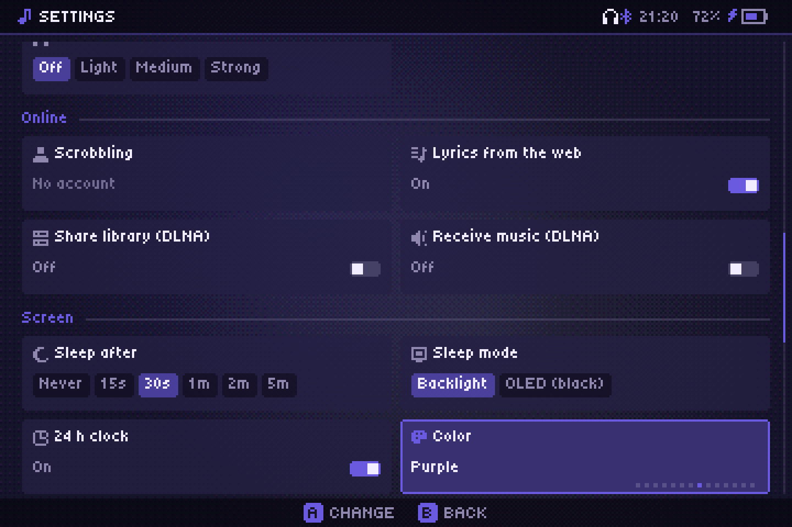

Настройки
Каждая плитка в Настройках, раздел за разделом.
Настройки — это плитки: переключатель меняется кнопкой A; выбор открывается кнопкой A, затем ←/→ выбирают (применяется сразу), а A или B закрывают. Они сохраняются в audiofilus.json.
Библиотека
- Папка: твоя папка с музыкой. Пересканировать: найти новые песни. Серверы: Subsonic, Navidrome, Jellyfin. Списки радио и Пресеты MilkDrop: папки для твоих списков станций и пресетов MilkDrop, выбираются тем же проводником папок (по умолчанию
radioиmilkdropрядом с приложением). На iPhone их нет.
Воспроизведение
- Перемешать, Повтор (Выкл, Все, Одну), Громкость (от 0 до 200 %), Плавный переход (от Выкл до 12 с).
- Будильник: см. Будильник.
Звук
- ReplayGain, Эквалайзер (графический или параметрический), Частота вывода, Ресемплинг (Авто, Батарея, Качество): смотри Звук.
- Кроссфид (Выкл, Лёгкий, Средний, Сильный): см. Кроссфид.
Онлайн
- Скробблинг: Last.fm и ListenBrainz. Тексты из сети: искать тексты в LRCLIB.
- Общая библиотека (DLNA) и Приём музыки (DLNA): смотри Сеть. Выключены по умолчанию.
Экран
- Сон через: Никогда, 15 с, 30 с, 1, 2 или 5 минут без касаний. Пока играет музыка, считается только на экране «Сейчас играет».
- Режим сна: Подсветка выключает подсветку; OLED (чёрный) просто заливает экран чёрным, что на OLED-экране означает выключенные пиксели.
- 24-часовой формат.
- Цвет: Альбома (цвета каждого альбома, по умолчанию) или постоянный цвет под твою консоль: Красный, Оранжевый, Жёлтый, Зелёный, Голубой, Синий, Фиолетовый, Розовый, Жемчужно-розовый, Белый, Платиновый, Графитовый, Чёрный.

Настройки сна показываются только на портативных консолях.
Система
- Language: English, Español, Português, Français, Italiano, Deutsch, Polski, Türkçe, Русский, Indonesia, 日本語, 中文, 한국어.
- Звуки музыки и Звуки меню: Выкл, Тихо, Средне или Громко — для чиптюн-звуков действий с музыкой и меню.
- Поменять A/B и X/Y.
О программе
- Обновление: показывает версию. Раз в день приложение проверяет последний релиз и сообщает, когда выходит новый; нажмите здесь A, чтобы установить его. Оно скачивает пакет для вашей установки (PortMaster, muOS, Linux или Windows), проверяет его, заменяет файлы и перезапускается — настройки и данные остаются. Из терминала:
audiofilus update. - GitHub и Купи мне кофе показывают QR-код.
Выход
- Играть после закрытия: продолжит ли музыка играть, если плеер закрыт не через «Выйти». На компьютере по умолчанию включено, на портативных консолях — выключено.
- Уйти в фон: закрыть плеер, оставить музыку. Выйти: остановить всё.
На iPhone Частота вывода, Играть после закрытия и Уйти в фон не показываются: музыка и так продолжает играть, когда ты выходишь из приложения.